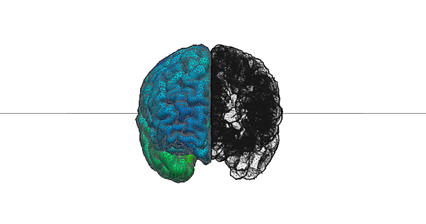

WELCOME
My research combines structural and functional brain imaging with statistical and network-level analysis to study healthy and diseased populations.
We combine these imaging techniques with comprehensive behavioural phenotyping to identify brain substrates underlying individual differences in cognition and affect.
In neurological and neurodevelopmental disorders, particularly epilepsy and autism spectrum disorders, we develop in-vivo methodologies to profile individual patients and to predict future disease trajectories and clinically relevant outcomes prospectively.
JOURNAL ARTICLES
- S.L. Valk*, B.C. Bernhardt*, A. Boeckler, M. Trautwein, P. Kanske, T. Singer (2016) Perceptual and cognitive metacognition have divergent structural brain substrates: a multi-modal imaging study. Human Brain Mapping, in press.
- S.L. Valk, B.C. Bernhardt, A. Boeckler, M. Trautwein, P. Kanske, T. Singer (2016) Socio-cognitive phenotypes differentially modulate large-scale structural covariance networks. Cerebral Cortex, in press. [pubmed]
- M. Goubran, B.C. Bernhardt, D. Cantor-Rivera, J. Lau, C. Blinston, S. de Ribaupierre, J. Burneo, S. Mirsattari, D. Steven, A. Parrent, A. Bernasconi, N. Bernasconi, T. Peters, A. Khan (2015) In-vivo MRI signatures of hippocampal subfield pathology in intractable epilepsy. Human Brain Mapping, in press. [pubmed]
- M. Liu*, B.C. Bernhardt*, A. Bernasconi, N. Bernasconi (2015) Grey matter structural compromise is equally distributed in left and right temporal lobe epilepsy. Human Brain Mapping, in press. [pubmed]
- J. Kulaga-Yoskovitz*, B.C. Bernhardt*, S. Hong, T. Mansi, K. Liang, A. van der Kouve, J. Smallwood, A. Bernasconi, N. Bernasconi (2015) Multi-contrast and submillimetric 3T hippocampal subfield segmentation protocol and dataset. Scientific data, in press. [pubmed]
- S. Hong*, B.C. Bernhardt*, D.V. Schrader, N. Bernasconi, A. Bernasconi (2015) Whole-brain MRI phenotyping of focal cortical dysplasia. Neurology, in press.
- B.C. Bernhardt, L. Bonilha, D.W. Gross (2015) Network analysis for a network disorder: the emerging role of graph theory in the study of epilepsy. Epilepsy and Behaviour, in press. [pubmed]
- B.C. Bernhardt, N. Bernasconi, S. Hong, S. Dery, A. Bernasconi (2015) Subregional mesiotemporal network regularization and fragmentation in temporal lobe epilepsy. Cerebral Cortex, in press. [pubmed]
- S. Hong, B.C. Bernhardt, B. Caldairou, M. Liu, N. Bernasconi, A. Bernasconi (2015) MRI-based subtype prediction of epileptogenic cortical malformations. Medical Image Processing and Computer-Assisted Intervention. in press.
- S.Valk, A. DiMartino, M. Milham, BC. Bernhardt (2015) Multi-center mapping of structural network alterations in autism. Human Brain Mapping, in press. [pubmed]
- B.C. Bernhardt, S. Hong, A. Bernasconi, N. Bernasconi (2015) MRI pattern learning in temporal lobe epilepsy: patient classification and prognostics. Annals of Neurology, in press. [pubmed]
- H.Kim, B.C. Bernhardt, J. Kulaga-Yoskovitz, B. Caldairou, A. Bernasconi, N. Bernasconi (2014) Multi-variate hippocampal subfield analysis of local intensity and volume: application to temporal lobe epilepsy.Proceedings of Medical Image Processing and Computer-Assisted Intervention (MICCAI). Golland P. et al. (Eds.), 8674: 170-178.[pubmed]
- L. Caciagli, B.C. Bernhardt, S. Hong, A. Bernasconi, N. Bernasconi (2014) Functional network alterations and their structural substrate in drug-resistant epilepsy. Front Human Neuroscience. 8:411. [pubmed]
- N. Steinbeis, B.C. Bernhardt, T. Singer (2014) Age-related Differences in Function and Structure of rSMG and Reduced Functional Connectivity with DLPFC Explains Heightened Emotional Egocentricity Bias in Childhood. Social Cognitive and Affective Neuroscience, in press. [pubmed]
- A. Tusche, J. Smallwood, B.C. Bernhardt, T. Singer (2014) Revealing the Affective Content of Thoughts during Task-Free Rest Periods. NeuroImage. 97:107-16. [pubmed]
- S. Hong, H. Kim, N. Bernasconi, B.C. Bernhardt, A. Bernasconi (2014) Automatic detection of cortical dysplasia type II in MRI-negative epilepsy. Neurology. 83(1):48-55. [pubmed]
- Z. Zhang, W. Liao, B. Bernhardt, Z. Wang, K. Sun, F. Yang, Y. Liu, G. Lu (2014) Brain iron redistribution in mesial temporal lobe epilepsy: a susceptibility-weighted magnetic resonance imaging study. BMC Neurosci.15(1):117[pubmed]
- B.C. Bernhardt, J. Smallwood, A. Tusche, F. Ruby, H. Engen, N. Steinbeis, T. Singer (2013) Medial prefrontal and anterior cingulate cortical thickness predicts shared individual differences in self-generated thought and temporal discounting. NeuroImage. 90:290-7.[pubmed]
- B.C. Bernhardt, H. Kim, N. Bernasconi (2013) Patterns of subregional mesiotemporal disease progression in temporal lobe epilepsy. Neurology 81(21):1840-7. [pubmed]
- B.C. Bernhardt, S. Hong, A. Bernasconi, N. Bernasconi (2013) Imaging structural and functional brain networks in temporal lobe epilepsy. Front Hum Neurosci.1;7:624. [pubmed]
- B.C. Bernhardt, S.L. Valk, G. Silani, G. Bird, U. Frith T. Singer (2013) Selective disruption of sociocognitive brain networks in autism and alexithymia. Cerebral Cortex, in press.[pubmed]
- B.C. Bernhardt, O. Klimecki, S. Leiberg, T. Singer (2013) Structural covariance networks of dorsal anterior insula predict females' individual differences in empathy. Cerebral Cortex, in press.[pubmed]
- L. Concha, H. Kim, A. Bernasconi, B.C. Bernhardt, N. Bernasconi (2012) Spatial patterns of water diffusion along white matter tracts in temporal lobe epilepsy. Neurology, 79(5):455-62.[pubmed]
- N. Steinbeis, B.C. Bernhardt, T. Singer (2012) Impulse control and underlying functions of the left DLPFC mediate age-related and age-independent individual differences in strategic social behavior. Neuron, 73(5):1040-51. [pubmed]
- B.C. Bernhardt and T. Singer (2012) The neural basis of empathy. Annual Review of Neuroscience, 3:1-35. [pubmed]
- H. Kim, M. Chupin, O. Colliot, B.C. Bernhardt, N. Bernasconi. A. Bernasconi (2012) Automatic hippocampal segmentation in temporal lobe epilepsy: impact of developmental abnormalities. Neuroimage, 59(4):3178-86. [pubmed]
- B.C. Bernhardt, N. Bernasconi. H. Kim, A. Bernasconi (2012) Thalamo-cortical network pathology in temporal lobe epilepsy. Neurology, 78(2):129-36. [pubmed]
- N. Kemmotsu, H.M. Girard, B.C. Bernhardt, L. Bonilha, J.J. Lin, E.S. Tecoma, V.J. Iragui, D.J. Hagler, E. Halgren, C.R. McDonald (2011) MRI analysis in temporal lobe epilepsy: cortical thinning and white matter disruptions are related to side of seizure onset. Epilepsia, 52(12):2257-66. [pubmed]
- B.C. Bernhardt, Z. Chen, Y. He, A.C. Evans, N. Bernasconi (2011) Graph-theoretical analysis reveals disrupted small-world organization of cortical thickness correlation networks in temporal lobe epilepsy. Cerebral Cortex, 21(9):2147-57. [pubmed]
- A. Bernasconi, N. Bernasconi, B.C. Bernhardt, D. Schrader (2011) Advances in imaging for 'cryptogenic' epilepsies. Nature Reviews Neurology, 7(2):99-108. [pubmed]
- N.L. Voets, B.C. Bernhardt, H. Kim, U. Yoon, N. Bernasconi (2011) Increased temporo-limbic cortical folding complexity in temporal lobe epilepsy. Neurology, 76(2):138-44. [pubmed]
- N. Bernasconi and B.C. Bernhardt (2010) Temporal lobe epilepsy is a progressive disorder. Nature Reviews Neurology, 6(3). [pubmed]
- B.C. Bernhardt, N. Bernasconi, L. Concha, A. Bernasconi (2010) Cortical thickness analysis in temporal lobe epilepsy: reproducibility and relation to outcome. Neurology, 74(22):1776-84 [pubmed]
- B.C. Bernhardt, D.A. Rozen, K.J. Worsley, A.C. Evans, N. Bernasconi, A. Bernasconi (2009) Thalamo-cortical network pathology in idiopathic generalized epilepsy: insights from MRI-based morphometric correlation analysis. NeuroImage, 46(2):373-81. [pubmed]
- B.C. Bernhardt, K.J. Worsley, H.Kim, A.C. Evans, A. Bernasconi,N. Bernasconi (2009) Longitudinal and cross-sectional analysis of atrophy in pharmacoresistant temporal lobe epilepsy. Neurology, 72(20): 1747-54. [pubmed]
- B.C. Bernhardt, K.J. Worsley, P. Besson, L. Concha, J.P. Lerch, A.C. Evans, N. Bernasconi (2008) Mapping limbic network organization in temporal lobe epilepsy using morphometric correlations: insights on the relation between mesiotemporal connectivity and cortical atrophy. Neuroimage, 42(2):515-24. [pubmed]
- H. Kim, N. Bernasconi, B.C. Bernhardt, O. Colliot and A. Bernasconi (2008) Temporal lobe epilepsy is associated with a single-branch collateral sulcus. Neurology, 70(22 Pt 2):2159-65. [pubmed]
BOOK CHAPTERS
- B.C. Bernhardt, A. DiMartino, S.L. Valk, G.L. Wallace. (2016) Neuroimaging-based phenotyping of the autism spectrum. In: Krach, Paulus, Woehr (Eds.) Social behavior from rodents to humans: neural foundations and clinical implications. Springer, in press.
- L. Caciagli, B.C. Bernhardt, N. Bernasconi (2016) Network modeling using structural and functional imaging in epilepsy. In: Bernasconi, Bernasconi, Koepp (Eds.) Imaging Biomarkers in epilepsy. Cambridge University Press, in press.
- J. Smallwood, D.S. Margulies B.C. Bernhardt, B. Jeffreys (2016) Investigating the elements of thought: Towards a component process account of spontaneous cognition. In: Handbook of spontaneous thought, in press
- S. Hong, M. Liu, B.C. Bernhardt, A. Bernasconi (2016) Computational neuroanatomy of epilepsy. In: Bernasconi, Bernasconi, Koepp (Eds.) Imaging Biomarkers in epilepsy. Cambridge University Press, in press.
- B.C. Bernhardt, A.C. Coan, L. Caciagli, N. Bernasconi (2016) Tracking disease progression in epilepsy. In: Bernasconi, Bernasconi, Koepp (Eds.) Imaging Biomarkers in epilepsy. Cambridge University Press, in press.
ABSTACTS/POSTERS
- S. Hong, B.C. Bernhardt, D.V. Schrader, N. Bernasconi, A. Bernasconi (submitted) Focal Cortical Dysplasia Type-II: MRI-based Profiling and Subtype Prediction. 22nd Annual Meeting of the Organization of Human Brain Mapping
- M. Liu, B.C. Bernhardt, S. Hong, B. Caldairou, A. Bernasconi, N. Bernasconi (submitted) Diffusion MRI of the subcortical white matter in temporal lobe epilepsy: relation to hippocampal volume and cortical thickness. 69th Annual Meeting of the American Epilepsy Society, Philadelphia, USA.
- S. Hong, B.C. Bernhardt, D.V. Schrader, N. Bernasconi, A. Bernasconi (2015) Multicontrast MRI profiling of focal cortical dysplasia type-II. 31st International Epilepsy Congress, Istanbul.
- M. Liu, B.C. Bernhardt, S. Hong, B. Caldairou, A. Bernasconi, N. Bernasconi (2015) Differential Distribution of Cortical Thinning and Subcortical White Matter Diffusion Anomalies in Temporal Lobe Epilepsy. 31st International Epilepsy Congress, Istanbul.
- B.C. Bernhardt, J. Kulaga-Yoskovitz, B. Caldairou, S. Hong, M. Liu, N. Bernasconi, A. Bernasconi (2015) MRI-based hippocampal subfield analysis accurately predicts surgical outcome. 31st International Epilepsy Congress, Istanbul.
- S. Valk, B.C. Bernhardt, A. Boeckler, T. Singer (2015) Perceptual and cognitive metacognition have divergent structural substrates: a multi-modal MRI study. 21st Annual Meeting of the Organization of Human Brain Mapping, Honolulu, Hawaii, USA.
- S. Valk, B.C. Bernhardt, A. Boeckler, P. Kanske, M. Trautwein, T. Singer (2015) Divergent network substrates of individual differences in empathy and mentalizing. 21st Annual Meeting of the Organization of Human Brain Mapping, Honolulu, Hawaii, USA.
- B.C. Bernhardt, J. Kulaga-Yoskovitz, B. Caldairou, S. Hong, M. Liu, N. Bernasconi, A. Bernasconi (2015) MRI phenotyping of hippocampal subfield pathology in temporal lobe epilepsy. 21st Annual Meeting of the Organization of Human Brain Mapping, Honolulu, Hawaii, USA.
- M. Liu, B.C. Bernhardt, S. Hong, B. Caldairou, N. Bernasconi, A. Bernasconi (2015) Multicontrast MRI analysis of gray and white matter pathology in temporal lobe epilepsy. S21st Annual Meeting of the Organization of Human Brain Mapping, Honolulu, Hawaii, USA.
- M Liu, N. Bernasconi, A. Bernasconi, B.C. Bernhardt, (2014) The severity of brain atrophy in temporal lobe epilepsy is unrelated to the side the focus: an engel class I study. 68th Annual Meeting of the American Epilepsy Society, Seattle, WA, USA.
- B.C. Bernhardt, H. Kim, A. Bernasconi, N. Bernasconi. (2014) MRI spectrum of unilateral temporal lobe epilepsy: a surface based pattern analysis of mesiotemporal substructures. 68th Annual Meeting of the American Epilepsy Society, Seattle, WA, USA.
- S. Hong, B.C. Bernhardt, D. Schrader, A. Bernasconi, N. Bernasconi. (2014) Automated detection of focal cortical dysplasia in MRI-negative epilepsy: class II diagnostic evidence. 68th Annual Meeting of the American Epilepsy Society, Seattle, WA, USA.
- L. Skottnik, B. Bernhardt, H. Engen, S. Valk, B. Cordemans, M. Ricard, T.Singer (2014) Expert compassion meditators show cortical thickness increases in socio-affective brain networks. Submitted to the 20th Annual Meeting of the Organization for Human Brain Mapping, Hamburg, Germany.
- B. Bernhardt, H. Kim, A. Bernasconi, N. Bernasconi (2014) Structural MRI profiling: accurate focus and surgical outcome prediction in temporal lobe epilepsy. Submitted to the 20th Annual Meeting of the Organization for Human Brain Mapping, Hamburg, Germany.
- B. Bernhardt, H. Kim, S. Hong, S. Dery, A. Bernasconi, N. Bernasconi (2014) Subregional mesiotemporal network regularization and fragmentation in temporal lobe epilepsy. Submitted to the 20th Annual Meeting of the Organization for Human Brain Mapping, Hamburg, Germany.
- B.C. Bernhardt, S. Valk, G. Silani, G. Bird, U. Frith, T. Singer (2013) Disruption of socio-cognitive networks in autism and alexithymia: an MRI covariance analysis. Proceedings of the 18th Annual Meeting of the Organization for Human Brain Mapping, Seattle, WA.
- B.C. Bernhardt, O. Klimecki, S. Leiberg, T. Singer (2013) Structural covariance networks of dorsal anterior insula predict individual differences in empathy. Proceedings of the 18th Annual Meeting of the Organization for Human Brain Mapping, Seattle, WA.
- B.C. Bernhardt, H. Kim, A. Bernasconi, N. Bernasconi (2013) Subregional mesiotemporal patterns of disease progression in temporal lobe epilepsy. 30th IEC meeting, Montreal 2013
- B.C. Bernhardt, N. Bernasconi (2013) Surface-based mapping of local structure-function relationships in temporal lobe epilepsy. 30th IEC meeting, Montreal 2013
- S. Hong, D. Schrader, B.C. Bernhardt, N. Bernasconi, A. Bernasconi (2013) Diffuse cortical atrophy in extra-temporal epilepsy with non-diagnostic MRI. 30th IEC meeting, Montreal 2013
- S. Hong, B.C. Bernhardt, N. Bernasconi, A. Bernasconi (2013) Patterns of large-scale brain networks organziation in lesional and non-lesional extra-temporal lobe epilepsy. 30th IEC meeting, Montreal 2013
- S. Hong, D. Schrader, B.C. Bernhardt, N. Bernasconi, A. Bernasconi (2013) Diffuse cortical atrophy in extra-temporal epilepsy with non-diagnostic MRI. 30th IEC meeting, Montreal 2013
- N. Steinbeis, B.C. Bernhardt, T. Singer (2013) The Role of Dorsolateral Prefrontal Cortex in the Development of Fairness and Strategic Social Decision-Making. SRCD Biennial Meeting, Seattle, WA, USA.
- N. Bernasconi, L. Concha, H. Kim, B.C. Bernhardt (2011) Mapping diffusion abnormalities along white matter tracts in temporal lobe epilepsy. 64th Annual Meeting of the American Epilepsy Society, Baltimore, ML, USA.
- M.R. Keezer, H. Kim, B.C. Bernhardt, A. Bernasconi, N. Bernasconi (2011) Shape analysis in temporal lobe epilepsy with amygdalar enlargement. 64th Annual Meeting of the American Epilepsy Society, Baltimore, ML, USA.
- B.C. Bernhardt, S.J. Hong, H. Kim, A. Bernasconi, N. Bernasconi (2011) Diffusion abnormalities of fiber tracts underlying cortical regions in temporal lobe epilepsy. Proceedings of the 17th Annual Meeting of the Organization for Human Brain Mapping, Quebec city, Canada.
- B.C. Bernhardt, S.J. Hong, Z. Chen, Y. He, A. Evans, N. Bernasconi (2011) Graph-theoretical analysis of cortical thickness correlations in temporal lobe epilepsy. Proceedings of the 17th Annual Meeting of the Organization for Human Brain Mapping, Quebec city, Canada.
- D. Riviere, B.C. Bernhardt, H. Kim, S.J. Hong, M. Perrot, J.F. Mangin, J. Regis, N. Bernasconi, A. Bernasconi (2011) Diffuse sulcal anomalies associated with focal epileptogenic mlformations of cortical development. Proceedings of the 17th Annual Meeting of the Organization for Human Brain Mapping, Quebec city, Canada.
- B.C. Bernhardt, N. Bernasconi (2010) MRI-based cortical thickness analysis in temporal lobe epilepsy: reproducibility and relation to surgical outcome. 64th Annual Meeting of the American Epilepsy Society, San Antonio, TX, USA.
- H. Kim, B.C. Bernhardt, J. Natsume, N. Bernasconi (2010) Mapping thalamic pathology in idiopathic generalized epilepsy and temporal lobe epilepsy 64th Annual Meeting of the American Epilepsy Society, San Antonio, TX, USA.
- D.S. Schrader, B.C. Bernhardt, A. Bernasconi (2010) MRI-based cortical thick- ness in malformations of cortical development. Proceedings of the 16th Annual Meeting of the Organization for Human Brain Mapping, Barcelona, Spain.
- B.C. Bernhardt, A. Bernasconi, Z. Chen, Y. He, A.C. Evans, N. Bernasconi (2010) Disrupted small-world organization of structural cortical networks in temporal lobe epilepsy. Proceedings of the 16th Annual Meeting of the Organization for Human Brain Mapping, Barcelona, Spain.
- B.C. Bernhardt, N. Bernasconi, L.Concha, A. Bernasconi (2010) MRI-based cortical thickness analysis in temporal lobe epilepsy: relationship to surgical outcome. Proceedings of the 16th Annual Meeting of the Organization for Human Brain Mapping, Barcelona, Spain.
- B.C. Bernhardt, A. Bernasconi, L.Concha, N. Bernasconi (2010) Trajectories of cortical pathology in temporal lobe epilepsy: A longitudinal MRI study. Proceedings of the 16th Annual Meeting of the Organization for Human Brain Mapping, Barcelona, Spain.
- L. Concha, H. Kim, B.C. Bernhardt, N. Bernasconi (2009) Spatial localization of diffusion abnormalities along DTI tracts in temporal lobe epilepsy. MICCAI Workshop, London.
- L. Concha, H. Kim, B.C. Bernhardt, N. Bernasconi (2009) Distance based analysis of DTI Tractography: Evidence for Focal Pathology in Temporal Lobe Epilepsy. 63rd Annual Meeting of the American Epilepsy Society, Boston, MA, USA.
- B.C. Bernhardt, H. Kim, J. Natsume, A. Bernasconi (2009) Mapping thalamic nuclear pathology in temporal lobe epilepsy. 63rd Annual Meeting of the American Epilepsy Society, Boston, MA, USA.
- A. Bernasconi, B.C. Bernhardt, H. Kim, J. Natsume, N. Bernasconi (2009) Idiopathic generalized epilepsy is associated with atrophy in pulvinar and somatomotor thalamic nuclei. 28th International Epilepsy Congress, Budapest, Hungary, June 2009.
- T. Mansi, S. Durrleman, B.C. Bernhardt, M. Sermesant, H. Delingette, I. Voigt, P. Luz, A.M. Taylor, J. Blanc, Y. Boudjemline, X. Pennec, N. Ayache (2009) A statistical model of right ventricle in Tetralogy of Fallot for prediction of remodelling and therapy planning. MICCAI, London.
- K.J. Worsley, J.E. Taylor, F. Carbonell, M.K. Chung, E. Duerden, B. Bernhardt, O. Lyttelton, M. Boucher, A.C. Evans (2009) SurfStat: A Matlab toolbox for the statistical analysis of univariate and multivariate surface and volumetric data using linear mixed effects models and random field theory. Proceedings of the 15th Annual Meeting of the Organization for Human Brain Mapping, San Francisco, California, June 2009.
- B.C .Bernhardt, H. Kim, J. Natsume, N. Bernasconi, A. Bernasconi (2009) Temporal lobe epilepsy is associated with atrophy of limbic thalamic nuclei. Proceedings of the 15th Annual Meeting of the Organization for Human Brain Mapping, San Francisco, California, June 2009.
- B.C. Bernhardt, K.J. Worsley, A.C. Evans, A. Bernasconi (2009) Cortical atrophy in temporal lobe epilepsy: distinguishing aging from disease progression. Proceedings of the 15th Annual Meeting of the Organization for Human Brain Mapping, San Francisco, California, June 2009.
- B.C. Bernhardt, K.J. Worsley, A. Bernasconi, N. Bernasconi (2008) Temporal lobe epilepsy is associated with progressive neocortical thinning: A longitudinal study. 62nd Annual Meeting of the American Epilepsy Society, Seattle, WA, USA.
- A. Bernasconi, B.C. Bernhardt (2008) Mapping thalamo-cortical connectivity in idiopathic generalized epilepsy using morphometric correlations. 62nd Annual Meeting of the American Epilepsy Society, Seattle, WA, USA.
- N. Bernasconi, B.C. Bernhardt (2008) Mapping cortical thickness in temporal lobe epilepsy: Similar findings in patients with and without hippocampal atrophy. 62nd Annual Meeting of the American Epilepsy Society, Seattle, WA, USA.
- B.C. Bernhardt, J. Lerch, A.C. Evans, N. Bernasconi, A.Bernasconi (2008) Mapping of entorhinal cortex connectivity in temporal lobe epilepsy. Proceedings of the 14th Annual Meeting of the Organization for Human Brain Mapping, Melbourne, Australia, June 2008.
- B.C. Bernhardt, H. Kim, U. Yoon, N. Bernasconi, A. Bernasconi (2008) TLE is associated with reduced folding of the temporal neocortex. Proceedings of the ISMRM 16th scientific meeting and exibition, Toronto, Canada, May 2008.
- B.C. Bernhardt, D. Rozen, L. Horwood, A. Bernasconi (2008) Thalamocortical atrophy in patients with primary generalized tonic and clonic seizures. Proceedings of the ISMRM 16th scientific meeting and exibition, Toronto, Canada, May 2008.
- H. Kim, M. Niethammer, B. C. Bernhardt, S. Bouix, N. Bernasconi, and A. Bernasconi (2008) SPHARM detects hippocampal subfield pathology in temporal lobe epilepsy. Proceedings of the ISMRM 16th scientific meeting and exibition, Toronto, Canada, May 2008.
- B.C. Bernhardt, S. Onat, S.K. Nagel,H. Frey, P. Koenig (2007) The neural processing of natural stereoscopic images. An EEG study. Proceedings of the 7th Meeting of the German Neuroscience Society / 31th Goettingen Neurobiology Conference 2007, Eds: K. Hoffman and K. Krieglstein, TS12-3B. Neuroforum 2007, Goettingen, Germany, February 2007.
- P. Koenig, A. Acik, B.C. Bernhardt, C. Carl, T. Dierkes, I. Dombrowe, S. Gelesz, C. Honey, L. Jansen, C. Kabisch, T. Kringe, L. Kurzen, C. Loerken, R. Maertin, S. Nagel, H. Saal, M. Stefaner, C. Stoeszel, V. Willenbockel (2005) feelSpace - The Sixth Sense. Poster & Demo at ASSC9, Association for the scientific study of consciousness, 9th annual meeting, California Institute of Technology, Pasadena, California, June 24 - June 27, 2005.
- P. Koenig, A. Acik, B.C. Bernhardt, C. Carl, T. Dierkes, I. Dombrowe, S. Gelesz, C. Honey, L. Jansen, C. Kabisch, T. Kringe, L. Kurzen, C. Loerken, R. Maertin, S. Nagel, H. Saal, M. Stefaner, C. Stoeszel, V. Willenbockel (2005) feelSpace - Report of a Study Group. Proceedings of the 6th Meeting of the German Neuroscience Society / 30th Goettingen Neurobiology Conference 2005, Eds: H. Zimmermann and K. Krieglstein, 1 Suppl.: 434B. Neuroforum 2005, Goettingen, Germany, February 2005.
TALKS
- December 2015. Holism vs Reductionism in the study of drug-resistant epilepsies. Invited talk for the neuroimaging special interest group at the Annual Meeting of the American Epilepsy Society, Philadelphia, WA.
- October 2015. Department of Psychology / York Neuroimaging Centre, York, UK.
- September 2015. MRI-based hippocampal subfield analysis accurately predicts surgical outcome. Platform presentation at 32th Annual International Epilepsy Congress, Istanbul, Turkey.
- April 2015. Feindel Lecture, Brain Imaging Centre, Montreal Neurological Institute and Hospital, McGill University, Montreal, QC, Canada
- 2014. MRI normalcy. Invited talk for the neuroimaging special interest group at the Annual Meeting of the American Epilepsy Society, Seattle, WA.
- 2014. Talk: Structural MRI biomarkers in intractable temporal lobe epilepsy. Epilepsy day oral presentation, Montreal Neurological Institute and Hospital, McGill University, Montreal, QC, Canada
- 2014. Lecture: Structural MRI analysis in the study of self-generated thought, social cognition, and autism. McGill University, Montreal, QC, Canada
- 2014. Lecture: Open Methods Meeting. SurfStat: surface-based statistics in matlab. Part of the Brain Imaging Centre Lectures, Montreal Neurological Institute and Hospital, McGill University, Montreal, QC, Canada
- 2014. Lecture: Structural MRI Analysis in the study of cognition, large-scale networks and brain pathology. Part of the Brain Imaging Centre Lectures, Montreal Neurological Institute and Hospital, McGill University, Montreal, QC, Canada
- 2013. Platform presentation: Subregional mesiotemporal patterns of disease progression in temporal lobe epilepsy. at IEC 30th Annual Meeting, Montreal, QC.
- 2013. Lecture: Structural MRI analysis: volumetry, voxel-based morphometry, cortical thickness measurements and structural covariance network mapping. Part of lecture series 'Analysis of structural and functional imaging data and brain connectivity' University of Leipzig / Max-Planck Institute for Human Cognitive and Brain Sciences.